두 장비가 같은 결함을 찾았는지 확인하고,
그 결과를 엑셀로 남기는 프로그램입니다.
그림 보는 법
이 문서를 펼치는 가장 흔한 이유는 “지금 이 화면에서 뭘 눌러야 하지” 입니다. 그때 손에 있는 단서는 화면 왼쪽 위의 제목 하나이므로, 그것으로 찾을 수 있게 둡니다.
| 화면 왼쪽 위에 이렇게 적혀 있다면 | 여기를 보세요 |
|---|---|
| AOI 레시피 검증 | 3장(어디에 무엇이 있는지) · 4장(설정) |
| Stage 1 — 후보 선별 | 6장 · 12장 |
| Stage 2 — … + 진행 바 | 7장 · 11장(멈춘 것처럼 보일 때) |
| 매치 검토 | 8장 · 12장 · 13장(판정 기준 한눈에) |
| 검증 결과 | 9장 · 12장 |
| 창이 떠서 뭘 물어본다 | 5장(시작 직후) · 11장(자주 겪는 실수) |
두 장비(기준 · 검증)가 같은 웨이퍼를 찍은 결함 사진을 짝지어, 어느 쪽이 무엇을 놓쳤는지 확인합니다.
예를 들어 17호기가 찾은 결함 6장과 18호기가 찾은 결함 6장이 있을 때, 프로그램은 같은 결함끼리 짝을 지어 줍니다. 짝이 없는 사진은 한쪽 장비만 발견한 것이므로 검토 대상이 됩니다. 결과는 엑셀 한 장으로 정리됩니다.
사진 수에 따라 다르지만, 슬롯 2개·사진 12장 규모라면 몇 분이면 끝납니다. 사진이 수천 장이면 스캔과 첫 계산에서 수 분씩 걸릴 수 있습니다 — 그때 화면이 잠시 반응하지 않는 것은 정상입니다(11장 참고).
두 폴더를 지정하는데, 이름이 뜻하는 바는 다음과 같습니다.
| 항목 | 의미 |
|---|---|
| 기준 장비 | 비교의 기준이 되는 쪽입니다. 이 장비가 찍은 사진 한 장 한 장에 대해 짝을 찾습니다. |
| 검증 장비 | 기준과 맞춰 보는 쪽입니다. 여기서 짝을 찾지 못하면 이 장비가 놓쳤다는 기록이 남습니다. |
어느 쪽을 기준으로 둘지는 확인하려는 목적에 따라 정하시면 됩니다. 보통 검증하려는 장비를 검증 장비에 두고, 믿을 수 있는 장비를 기준에 둡니다.
폴더 구조만 맞으면 나머지는 프로그램이 알아서 합니다. 반대로 여기서 어긋나면 두 폴더에 공통된 Slot 이 존재하지 않습니다 안내가 나옵니다.
프로그램에 알려 줄 것은 슬롯 폴더들이 들어 있는 상위 폴더입니다. 슬롯 폴더 자체를 지정하면 안 됩니다.
.jpg .jpeg .png .bmp 입니다.짝을 찾는 기준은 결함의 좌표이고, 좌표는 파일명이나 폴더 안의 정보 파일
(ColorImageGrabingInfo.ini, KLA .001 파일 등)에서 읽습니다.
사진만 골라 새 폴더에 모으면 이 정보가 빠져 매칭을 시작할 수 없습니다.
폴더째 가져오시기 바랍니다.
다음 한 가지만 결함 사진이 아니므로 프로그램이 알아서 제외합니다. 지우지 않으셔도 됩니다.
| 파일 | 이유 |
|---|---|
| CognexInSight…jpg | 웨이퍼 전경(매크로) 사진 — 결함 좌표가 없습니다 |
그 밖의 사진은 전부 매칭 대상입니다. 이름에 t 가 들어간 사진
(-86955.68631.t.1.jpg)도 예전에는 빠졌지만 지금은 함께 검증합니다.
받은 폴더 안의 AOI_Verify.exe 를 두 번 누르면 켜집니다 (.bat 으로 받으셨다면 run_aoi.bat). 처음 켤 때는 몇 초 걸리고, 이 화면이 나오면 준비된 것입니다. 여섯 군데만 알면 됩니다.
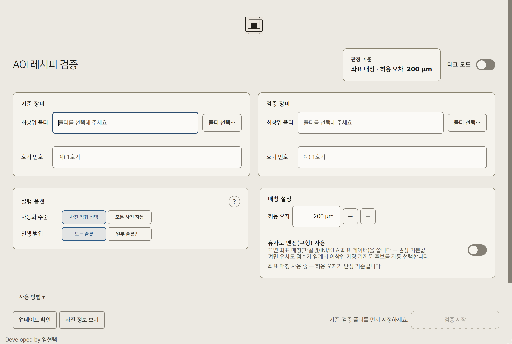
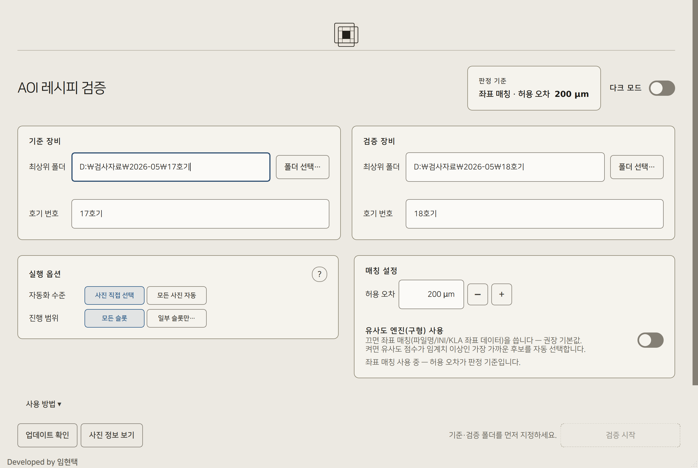
| 버튼에 보이는 글자 | 뜻과 할 일 |
|---|---|
| 검증 시작 흐리게 + 기준·검증 폴더를 먼저 지정하세요. |
폴더가 비었거나 존재하지 않습니다. 입력란이 빨갛다면 경로가 잘못된 것입니다. |
| 준비 중… | 프로그램이 아직 내부 구성 요소를 불러오는 중입니다. 몇 초 기다리면 저절로 켜집니다. |
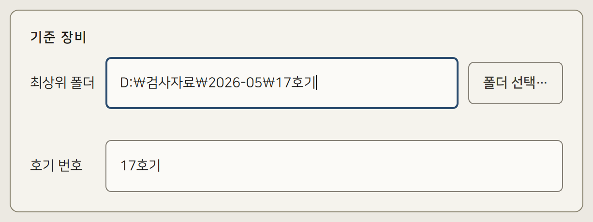
\\서버\공유폴더\…)도 직접 붙여넣을 수 있습니다.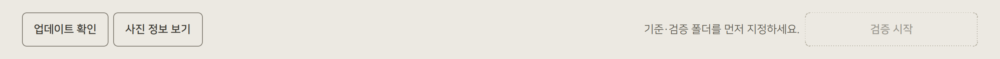
호기 번호가 K-숫자 또는 KLA-숫자 이면 그쪽을 KLA 장비로 자동 판정해,
5장의 KLA 장비 확인 질문이 아예 뜨지 않습니다.
호기 번호는 엑셀 표 머리글에도 그대로 쓰입니다.
대부분은 기본값 그대로 두시면 됩니다. 바꿀 일이 있는 것만 설명합니다.
| 항목 | 선택지와 뜻 |
|---|---|
| 자동화 수준 | 사진 직접 선택 — 기준 사진을 한 장씩 보고 검증할지 고릅니다(1단계 화면이 나옵니다). 모든 사진 자동 — 1단계를 건너뛰고 기준 사진 전부를 넘깁니다. 사진이 많고 전수 확인이 필요할 때 씁니다. ※ 이 선택은 1단계를 사람이 하느냐만 가릅니다. 짝을 짓는 2단계 매칭은 어느 쪽이든 자동입니다. |
| 진행 범위 | 모든 슬롯 — 기본값. 일부 슬롯만… — 누르는 즉시 슬롯 선택 창이 열립니다. 급한 슬롯만 먼저 돌릴 때 씁니다. |
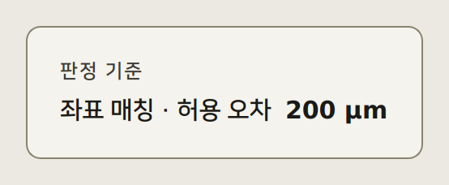
허용 오차는 두 결함 좌표가 이 거리 안에 있으면 같은 결함으로 보겠다는 값입니다. 기본 200 µm 이며 − + 버튼으로 50 µm 씩 조정합니다.
허용 오차 입력란과 유사도 슬라이더는 휠에 반응하지 않습니다. 화면을 스크롤하다가 값이 바뀌어 잘못된 기준으로 검증하는 일을 막기 위한 것입니다. − + 버튼을 쓰시거나 슬라이더를 직접 끌어 주세요.
폴더에서 die 크기를 읽으면 입력란 아래에 안내가 나옵니다. die 가 작은 자재는 이 값을 보고 허용 오차를 낮춰 주세요 — 기본값을 그대로 쓰면 이웃 결함과 잘못 짝지어질 수 있습니다.
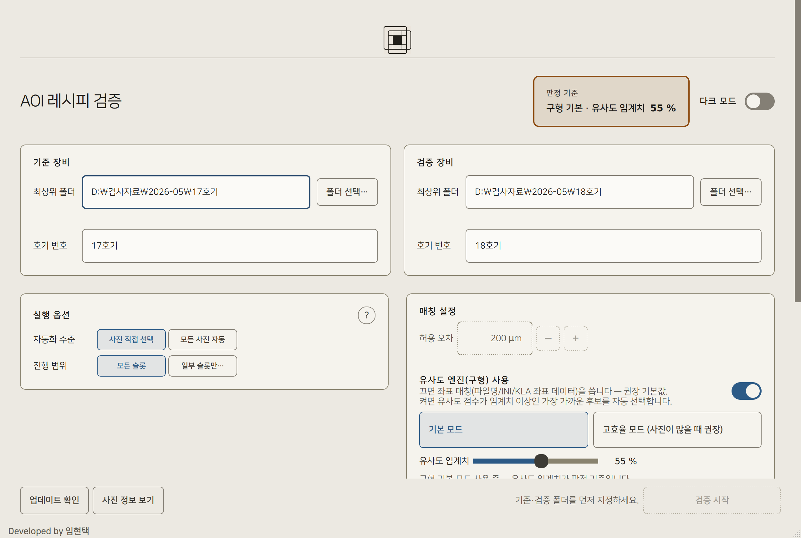
좌표 정보가 없는 예전 자료를 다룰 때만 쓰는 대체 경로입니다. 켜면 판정 기준이 거리(µm)에서 유사도(%)로 바뀌고, 허용 오차 줄은 회색으로 비활성됩니다(주황 상자).
좌표 데이터가 없으면 매칭을 시작할 때 프로그램이 먼저 안내하므로, 그 안내를 본 뒤에 켜셔도 늦지 않습니다.
검증 시작을 누르면 프로그램이 스스로 몇 가지를 처리합니다. 그동안 사람에게 묻는 것은 KLA 장비 확인과, 슬롯 이름이 한쪽에만 있을 때의 슬롯 수동 매핑 두 가지입니다.
첫 화면의 진행 범위 에서 일부 슬롯만… 을 고르면 그 자리에서 즉시 열립니다(4장 참고). 검증 시작 은 이미 정해진 슬롯 목록을 실어 보낼 뿐입니다.
이 화면이 떠 있는 동안에는 뒤 화면을 조작할 수 없지만, 중지 로 취소할 수 있습니다. 사진이 아주 많거나 네트워크 폴더(NAS)를 쓰면 수 초에서 수십 초 걸릴 수 있습니다.
폴더를 읽지 못하면 폴더를 읽는 중 문제가 생겼습니다… 안내가 뜨고 설정 화면으로 돌아옵니다 — 로딩 화면에 갇히지 않습니다. 검증 시작 을 눌렀는데 폴더를 확인하는 중입니다… 가 잠깐 뜨는 것도 정상입니다(네트워크 폴더의 응답을 기다리는 동안 시작을 잠급니다).
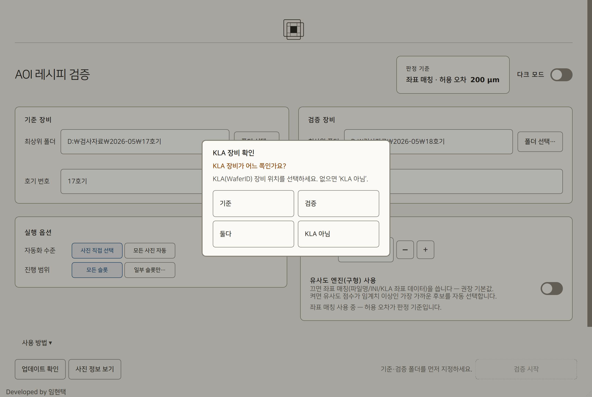
| 선택 | 이럴 때 고릅니다 |
|---|---|
| 기준 | 기준 쪽이 KLA 장비입니다. |
| 검증 | 검증 쪽이 KLA 장비입니다. |
| 둘다 | 양쪽 모두 KLA 장비입니다. |
| KLA 아님 | KLA 장비가 없습니다. 슬롯 이름을 그대로 씁니다. |
KLA 를 고르면 폴더 안의 정보 파일에서 WaferID 를 읽어 양쪽 슬롯을 자동으로 묶습니다. 정보 파일이 없으면 사진 속 글자를 읽어(OCR) 보완합니다. 이 작업은 백그라운드에서 돌아 화면이 멈추지 않습니다.
결과에서 모든 슬롯이 기준 전용 또는 검증 전용으로만 나온다면 이 선택을 되짚어 보세요. 3장에서 설명한 대로 호기 번호를 K-6 형태로 적어 두면 이 질문 자체가 나오지 않습니다.
위에 적었듯 이 창은 첫 화면에서 열립니다(4장 진행 범위). 여기 실어 두는 것은 어떤 창인지 보여 드리기 위해서입니다.
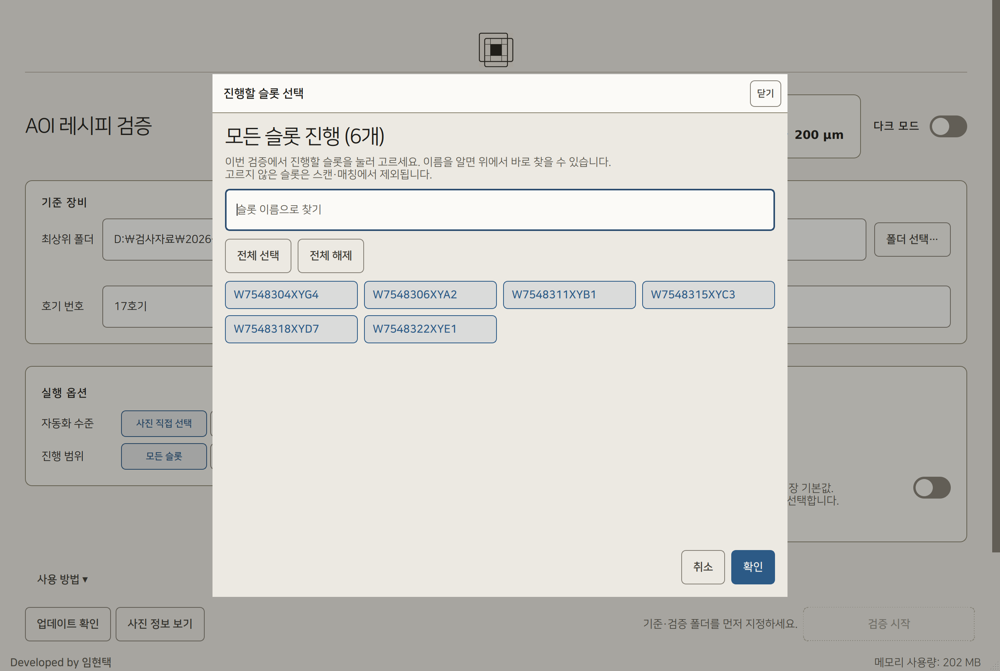
KLA 로도 묶이지 않은 슬롯이 남으면 프로그램이 묻습니다 — 한쪽에만 존재하는 Slot 이 있습니다 … 슬롯을 직접 짝지어 주시겠습니까?
[예] 를 누르면 Slot 수동 매핑 창이 열립니다. 왼쪽 기준(남은 슬롯) 과 오른쪽 검증(남은 슬롯) 에서 하나씩 고른 뒤 묶기 ↔ 를 누르면 아래 묶은 쌍 에 들어갑니다. 잘못 묶었으면 선택 해제 로 풉니다. 목록에는 WaferID 를 어떻게 읽었는지(정보파일 / 판독 실패 / 사진파일 없음)도 함께 표시됩니다.
[아니오] 를 누르거나 아무것도 묶지 않고 닫으면 그 슬롯들은 결과의 Slot 불일치 로만 남고 그 사진들은 검증되지 않습니다.
창을 열어 보기만 하고 아무것도 묶지 않으면 아무것도 바뀌지 않습니다. 이름이 정말 다른 웨이퍼라면 [아니오] 가 맞습니다.
기준 장비 사진을 한 장씩 보며 검증할지 뺄지만 정합니다. 모든 사진 자동 을 고르셨다면 이 화면은 나오지 않습니다.
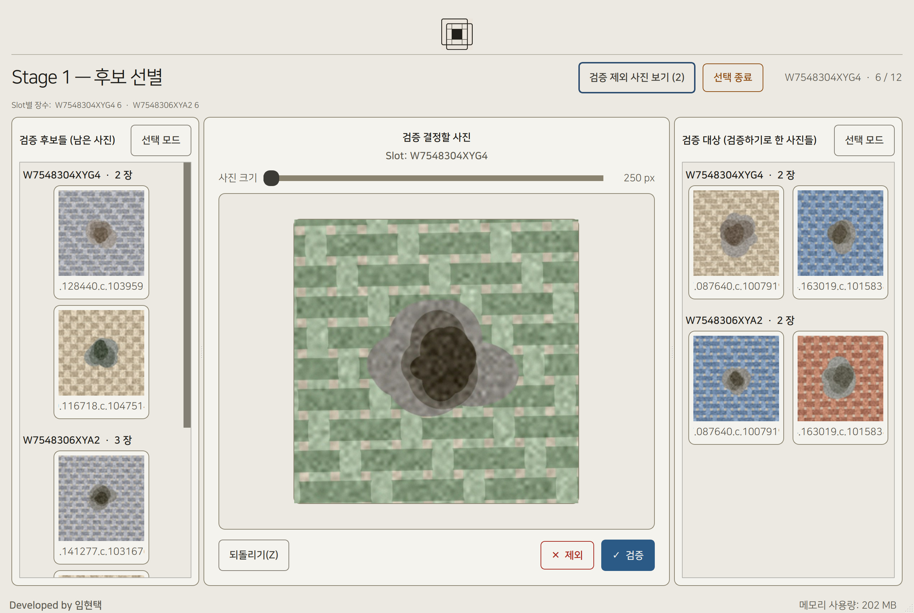
왼쪽 검증 후보들 패널의 사진을 클릭하면 파란 테두리로 선택됩니다. 한 장이라도 고르면 패널 제목 아래에 선택 3 장 제외 · 선택 3 장 검증 두 버튼이 위아래로 나타나고(0장이면 숨습니다), 누르면 선택한 사진이 한 번에 오른쪽·제외로 갑니다. 큰 창을 따로 열 필요가 없습니다.
일괄 처리도 Z 로 되돌릴 수 있습니다 — 한 장씩 결정한 것과 똑같이 기록되므로 Z 한 번에 한 장씩 돌아옵니다(3장을 보냈으면 세 번). 오른쪽 검증 대상 패널이 아직 비어 있으면 → 또는 [✓ 검증] 으로 보낸 사진이 여기에 쌓입니다. 안내가 보입니다.
화면 왼쪽 위의 ← 설정으로 로 첫 화면에 돌아갑니다. 이미 결정한 사진이 있으면 지금까지 결정한 12 장이 사라지고 설정 화면으로 돌아갑니다. 계속할까요? 확인 창이 한 번 뜹니다.
사진이 수백 장이면 마우스보다 키보드가 편합니다. 버튼에 마우스를 올려도 같은 안내가 나옵니다.
| 키 | 동작 |
|---|---|
| → | 검증 — 오른쪽 패널이 ‘검증 대상’ 입니다 |
| ← | 제외 |
| Z | 직전 결정 되돌리기 |
| Ctrl+A | 왼쪽 목록 전체 선택 |
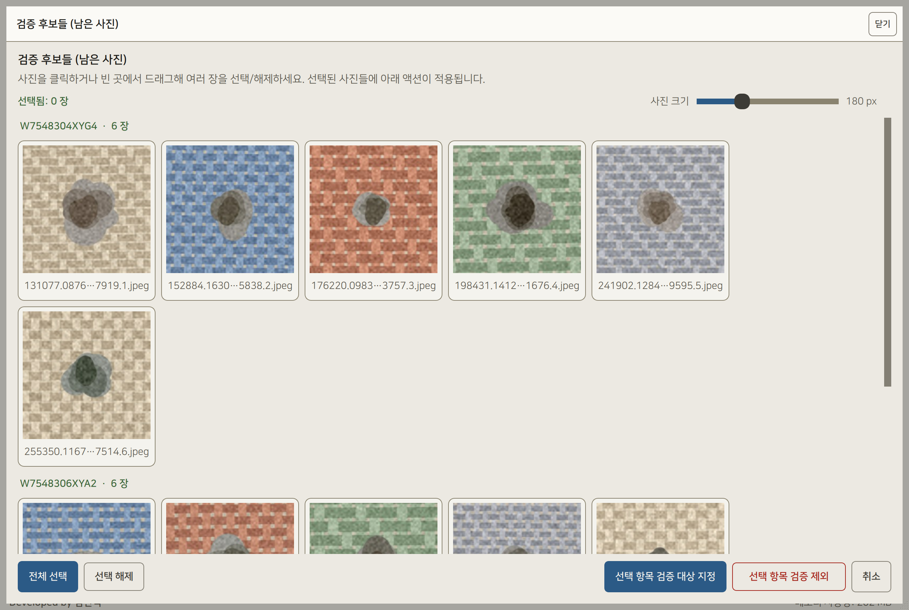
패널 오른쪽 위 선택 모드 를 누르면 큰 창이 열립니다. 사진을 클릭하거나 빈 곳에서 드래그해 여러 장을 고른 뒤 아래 버튼으로 한 번에 처리합니다.
사진이 1,000장 이상이면 200장씩 페이지로 나뉩니다. 타일을 우클릭하면 크게 볼 수 있습니다.
이 프로그램의 핵심입니다. 좌표가 가까운 것끼리 짝을 짓습니다. 사람이 고르지 않습니다 — 프로그램이 스스로 짝을 정하고 검토 화면으로 넘어갑니다.
자동화 수준을 사진 직접 선택 으로 두든 모든 사진 자동 으로 두든 매칭은 어느 쪽이든 자동입니다. 두 선택지는 앞 단계(후보 선별)를 사람이 하느냐만 가릅니다. 사람이 판단하는 곳은 1단계 선별과 검토 두 곳뿐입니다.
먼저 두 결함이 같은 die(칸) 또는 바로 옆 die 에 있는지 봅니다 (col·row 차이가 각각 1 이내). 장비마다 die 번호가 1씩 어긋나는 경우가 있어 정확히 같은 칸만 보면 매칭이 전멸하기 때문입니다.
그다음 두 좌표 사이의 실제 거리를 재어 다음과 같이 나눕니다. 후보가 여럿이면 가장 가까운 것이 짝으로 확정됩니다.
| 두 결함 사이의 거리 | 판정 | 화면에서 |
|---|---|---|
| 허용 오차 이내 기본값이면 200 µm 이하 |
일치 | 거리만 표시되고 판정 칸은 비어 있습니다 |
| 허용 오차 초과 3배 이내까지 |
허용 초과 | 행이 붉어지고 허용 초과 도장이 찍힙니다 |
| 허용 오차의 3배 초과 | 매치 실패 | 짝을 만들지 않습니다. 결과 화면에서 따로 검토합니다 |
가장 가까운 후보가 20 µm 이내면 사실상 같은 결함이 확실하므로, 검토 화면에 차순위 후보를 한 장도 놓지 않습니다. (허용 오차를 40 µm 아래로 낮추면 이 기준도 허용 오차의 절반까지 함께 좁아집니다 — 그러지 않으면 모든 짝이 '확정' 이 되어 차순위가 사라지기 때문입니다.) 그보다 멀면 허용 오차의 3배 이내 후보를 모두 가까운 순서로 남겨, 검토 화면에서 클릭 한 번으로 바꿔 끼울 수 있게 합니다.
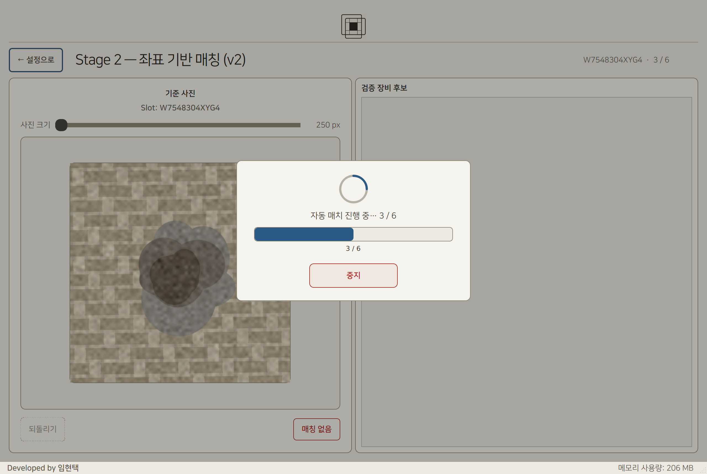
화면이 Stage 2 — 좌표 기반 매칭 (v2) 로 바뀌고 그 위를 로딩 화면이 덮습니다. 모양은 5장에서 본 로딩 화면과 같고, 문구만 차례로 바뀝니다.
왼쪽 위 큰 제목이 지금 실제로 쓰이는 방식을 그대로 알려 줍니다(구형 엔진을 켜면 Stage 2 — 유사도 기반 매칭 으로 바뀝니다). 이 화면에서 누르실 것은 없습니다 — 매칭은 언제나 자동이라 매칭 없음 버튼과 N 단축키는 아예 없앴습니다. 계산이 도는 동안 잘못 눌러 사실이 아닌 미탐이 기록되는 일을 막기 위해서입니다. 잘못된 짝은 다음 검토 화면에서 사진을 보며 고치시면 됩니다.
설정을 바꿔 다시 시작할 때 옛 결과가 섞이지 않도록 하기 위한 것입니다. 잠시 기다릴 수 있다면 그대로 두시는 편이 낫습니다.
좌표 정보가 없습니다. … 매칭 설정에서 유사도 엔진(구형) 사용 을 켠 뒤 다시 시작하세요. 라는 안내가 나오면, 2장의 폴더 준비를 먼저 확인해 주세요. 대개 정보 파일 없이 사진만 복사한 경우입니다.
매칭이 끝나면 이 화면으로 넘어옵니다. 이 한 화면만 익히면 이 프로그램을 다 쓰신 것입니다.
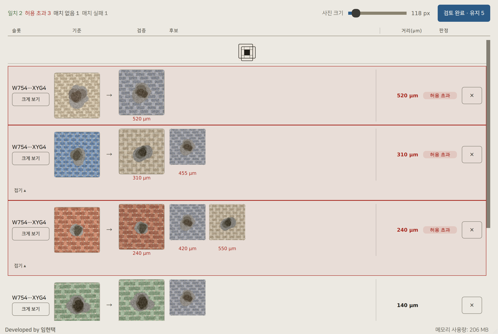
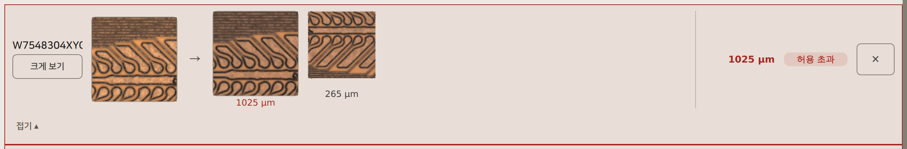
이 도장은 “거리가 멀다”는 사실만 말합니다. “틀렸다”는 뜻이 아닙니다. 초과 행을 만나면 숫자가 아니라 두 사진을 보세요.
그림 속 예시는 설명을 위해 그린 것이라 천 = 주변 패턴, 얼룩 = 결함 으로 보시면 됩니다. 실제 웨이퍼에서는 이렇게 봅니다.
셋 중 하나라도 확실히 다르면 다른 결함입니다. 셋 다 애매하면 크게 보기 로 나란히 놓고 보세요.
| 두 사진을 보니 | 하실 일 | 왜 |
|---|---|---|
| 같은 결함으로 보인다 | 그대로 둡니다 | 좌표만 조금 벌어진 것입니다. 엑셀에 ‘검증 장비도 이 결함을 찾았다’ 로 기록됩니다. |
| 다른 결함인데 옆 후보가 맞아 보인다 | 그 차순위 후보를 클릭 | 짝이 그 사진으로 바뀝니다. |
| 다른 결함이고 맞는 후보도 없다 | × | 짝을 취소해 매치 없음 으로 넘깁니다. |
두 판정의 뜻 — 그대로 두면 ‘양쪽 다 찾았다’, × 로 빼면 ‘검증 장비가 놓쳤다’ 가 엑셀에 남습니다. 가만히 두는 것도 판정입니다. 애매하면 크게 보기 로 확인하고 정하세요 — 어느 쪽이든 검토 완료 · 유지 N 뒤에 결과 화면의 ← 검토 화면으로 로 다시 고칠 수 있습니다.
두 장비는 좌표를 재는 기준이 미세하게 다릅니다. 그래서 같은 결함인데도 거리가 허용 오차를 조금 넘는 일이 생깁니다. 같은 장비끼리 비교할 때보다 초과 행이 많다면 대개 이 경우이니, 숫자만 보고 지우지 마시고 사진을 확인해 주세요.
반대로, 초과 행이 유난히 많고 사진도 죄다 다르다면 허용 오차가 너무 큰 것입니다. 첫 화면에서 값을 낮춘 뒤 다시 돌리는 편이 빠릅니다.
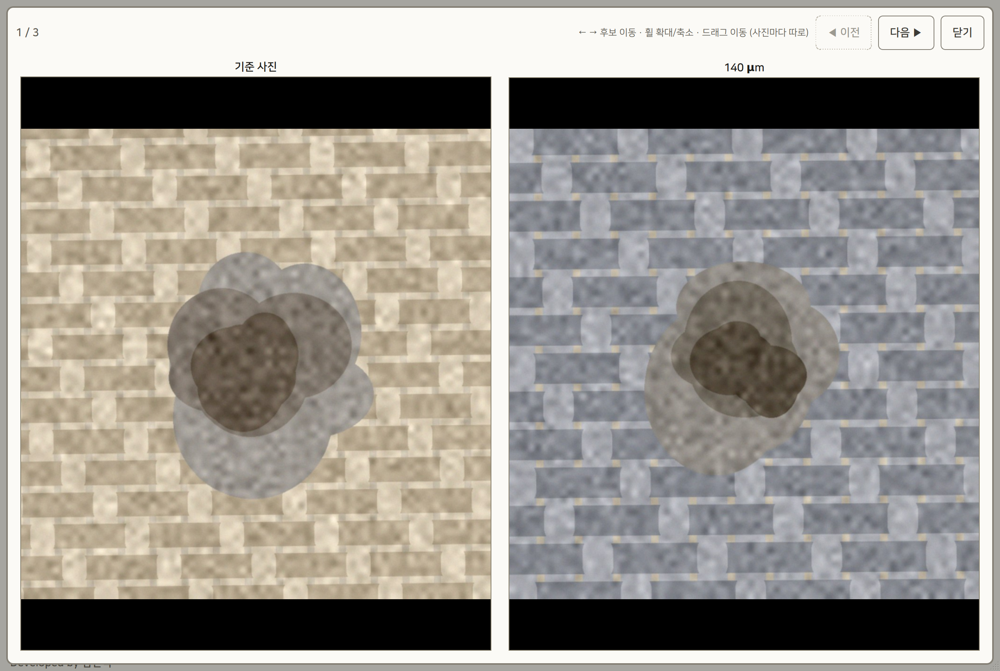
확대·이동은 마우스가 올라간 사진에만 적용됩니다. 기준 사진은 그대로 두고 후보만 확대해 볼 수 있어, 같은 위치를 비교하기 편합니다. 이 화면은 먼저 가벼운 사본을 띄워 바로 보여 준 뒤, 원본이 준비되는 대로 조용히 바꿔 끼웁니다 — 넘길 때 멈추지 않으면서도 최종 화질은 원본입니다.
누르는 순간 × 표시한 행이 미매칭으로 확정되고 결과 화면으로 넘어갑니다. 넘어간 뒤에도 결과 화면의 ← 검토 화면으로 로 이 화면에 다시 와서 고칠 수 있고, 매치 실패 사진 검토 로 짝을 못 찾은 사진을 직접 짝지어 줄 수 있으니, 이 화면에서 완벽하게 하려 애쓰지 않으셔도 됩니다.
마지막 화면입니다. 요약을 확인하고 엑셀로 저장합니다.
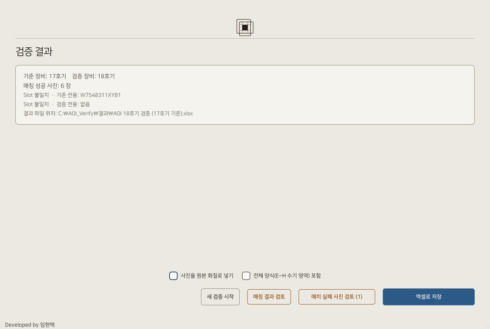
| 결과 화면 | 무엇을 세나 (검토 화면과의 관계) |
|---|---|
| 매칭 성공 | 짝이 남아 있는 사진 전부 = 검토 화면의 일치 + 허용 초과 |
| 허용 초과 | 매칭 성공 안에서 거리가 허용 오차를 넘은 것을 다시 센 것 — 따로 떼어 놓은 것이 아닙니다 |
| 매치 없음 | 짝이 없는 사진 전부 = 검토 화면의 매치 없음 + 매치 실패 |
| Slot 불일치 | 한쪽 장비에만 있던 슬롯 — 사진 장수가 아니라 슬롯 개수입니다 |
| 저장 옵션 | 켜면 |
|---|---|
| 미매칭 사진만 원본 화질로 넣기 | 미매칭 사진만 줄이지 않고 넣습니다. 매칭된 사진은 그대로라 파일이 크게 늘지 않습니다. |
| 사진을 원본 화질로 넣기 | 사진을 줄이지 않고 넣습니다. 화질은 좋아지지만 파일이 커지고 저장이 느려집니다. |
| 전체 양식(E~H 수기 영역) 포함 | 손으로 적는 칸이 있는 전체 양식 시트를 함께 만듭니다. |
← 검토 화면으로 를 누르면 방금 끝낸 검토 화면으로 그대로 돌아갑니다. 표시해 둔 ×(매치 없음)와 차순위 후보로 바꿔 끼운 짝이 모두 남아 있어 이어서 손볼 수 있습니다. 고친 뒤 검토 완료 · 유지 N 을 다시 누르면 결과 화면의 숫자가 갱신됩니다. 몇 번을 오가도 됩니다.
결과 화면에서 작은 목록 창을 따로 띄워 삭제 표시를 하던 방식이었는데, 같은 일을 하는 화면이 둘이라 어느 쪽에서 지웠는지 헷갈렸습니다. 이제 검토는 검토 화면 한 곳에서만 합니다 — 사진도 크게 보이고 되돌리기도 됩니다.
후보가 300장 미만인 슬롯에서는 후보 점수를 다시 계산합니다. 계산은 백그라운드에서 돌기 때문에 화면이 굳지 않고 진행 바가 실제로 움직입니다. 다만 계산이 끝날 때까지는 그 진행 바가 창을 덮고 있어 다음 사진으로 넘어갈 수는 없습니다 — 잠깐 기다리면 저절로 다음 화면이 나옵니다. 창이 죽은 것처럼 굳어 있던 예전과 다릅니다.
이 화면의 후보 순서는 좌표 거리가 아니라 사진 유사도입니다 — 좌표로 짝을 찾지 못한 사진들이라 유사도로 다시 줄을 세웁니다. 좌표 기준으로 검증했더라도 이 화면에서는 그렇게 보입니다.
시트는 앞에서부터 이 순서로 들어갑니다. 조건부로 만들어지는 것이 둘 있어 저번엔 있었는데 이번엔 없을 수 있습니다.
| 시트 | 언제 만들어지나 · 무엇이 담기나 |
|---|---|
| 미매칭 사진 | 짝을 못 찾은 사진이 있을 때만 만들어지고, 그때는 맨 앞에 옵니다. 검증 장비가 놓친 것이 여기 모입니다 — 검증의 결론이 실리는 시트입니다. |
| 요약 | 언제나 만들어집니다. 시트 이름은 결과 파일 이름과 같습니다. |
| Slot 불일치 목록 | 한쪽에만 있던 슬롯이 있을 때만 만들어집니다. |
| 전체 양식 | 결과 화면에서 전체 양식(E~H 수기 영역) 포함 을 켰을 때만. |
결과 파일은 프로그램 폴더 바깥의 결과\ 폴더에 저장되므로, 프로그램이 업데이트되어도 지워지지 않습니다.
매번 쓰지는 않지만 알아두면 편한 것들입니다.
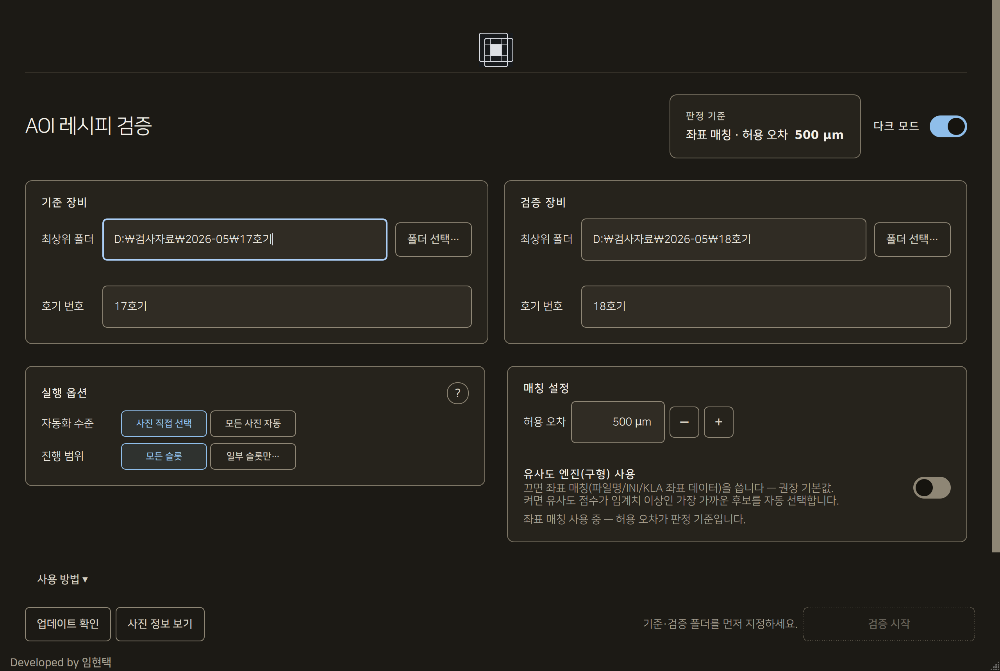
어두운 작업장에서 눈부심을 줄입니다. 첫 화면 오른쪽 위 스위치로 켭니다.
검증을 시작한 뒤에는 바꿀 수 없습니다. 화면을 다시 그리는 작업이라 진행 중인 상태가 사라지지 않도록 막아 둔 것입니다. 바꾸시려면 검증을 시작하기 전에 해 주세요.
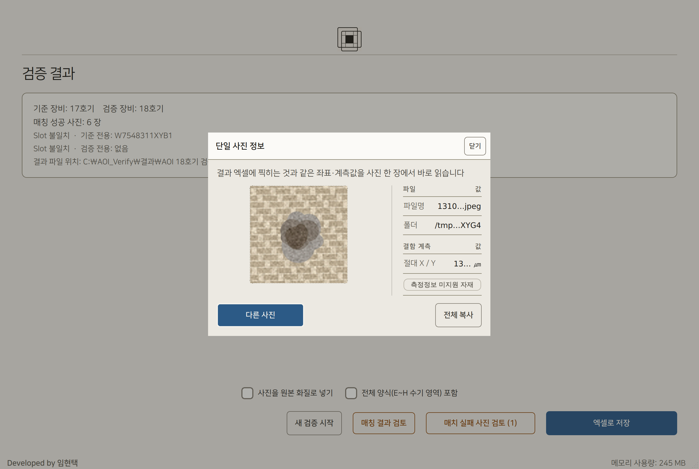
첫 화면 왼쪽 아래 사진 정보 보기 를 누르고 사진을 끌어다 놓으면, 엑셀에 찍히는 것과 같은 좌표·계측값을 사진 한 장에서 바로 확인할 수 있습니다.
좌표가 제대로 읽히는지 미리 확인할 때 유용합니다. Ctrl+O 로도 열립니다.
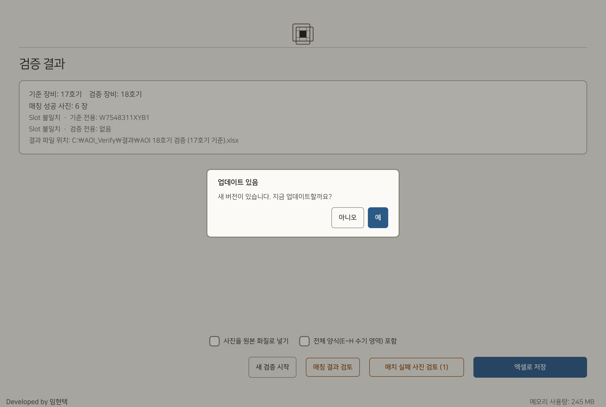
프로그램을 켤 때 자동으로 확인하고, 새 버전이 있으면 물어봅니다. 예 를 누르면 내려받은 뒤 프로그램이 스스로 종료됩니다. 다시 실행하면 새 버전으로 켜집니다.
검증 중에는 미루시는 편이 좋습니다 — 진행 중이던 작업이 사라집니다. 업데이트가 실패해도 지금 쓰던 버전은 그대로 남습니다.
| 기능 | 설명 |
|---|---|
| 전체화면 | F11 로 창을 화면 가득 채웁니다. 사진을 크게 볼 때 유용하며, 다시 누르면 원래 크기로 돌아옵니다. |
| 창 크기 기억 | 창 크기와 화면 분할 비율은 자동으로 저장되어 다음에 켤 때 그대로 복원됩니다. |
| 좁은 화면 대응 | 창을 좁히면 좌우로 나뉜 화면이 위아래로 바뀝니다. 가로 스크롤은 생기지 않습니다. |
| 이전 검증 설정 복원 | 검증 도중 프로그램이 닫혔다면 다음에 켤 때 이전 입력값(폴더·호기·판정 기준)만 복원해 처음부터 다시 시작할지 물어봅니다. 선별은 다시 하게 되지만, 직접 고르셨던 기준 사진은 선별 화면에서 재사용할지 다시 물어봅니다. |
고장으로 오해하기 쉬운 것과, 되돌리기 어려운 것을 모았습니다.
아래는 모두 정상 동작입니다. 계산이 끝나면 저절로 돌아옵니다. 강제 종료하지 마세요 — 진행 중이던 결과가 사라집니다.
| 언제 | 보통 걸리는 시간 | 왜 그런가 |
|---|---|---|
| 매치 실패 사진 검토에서 사진을 넘길 때 | 수 초 | 후보 점수를 백그라운드에서 다시 계산합니다. 진행 표시가 뜨고 창은 굳지 않습니다. |
| 검토 화면에 들어갈 때(행이 수백 개) | 수 초 | 행을 40개씩 나눠 만듭니다. 검토 목록 준비 중… 진행 표시가 뜨고, 다 만들어질 때까지 검토 완료 · 유지 N 은 눌리지 않습니다 — 못 본 행이 확정되지 않게 하기 위해서입니다. |
| 폴더 스캔 | 수 초 ~ 수십 초 | 사진이 많거나 네트워크 폴더(NAS)면 파일을 훑는 데 시간이 걸립니다. 중지 로 취소할 수 있고, 폴더를 읽지 못하면 안내가 뜨고 첫 화면으로 돌아옵니다 — 로딩 화면에 갇히지 않습니다. |
| 2단계 자동 매칭 | 수십 초 ~ 수 분 | 좌표를 읽고 모든 쌍의 거리를 잽니다. 중지 로 취소할 수 있습니다(진행분이 있으면 확인 창이 한 번 뜹니다). |
| 썸네일 만들기 | 수십 초 | 사진 목록을 빠르게 넘기기 위한 준비입니다. 중지 로 건너뛸 수 있습니다. |
| 엑셀로 저장 | 수십 초 | 사진을 파일에 넣습니다. 원본 화질 옵션을 켜면 더 오래 걸립니다. |
| 다크 모드 전환 | 1초 미만 | 화면을 다시 그립니다. 전환 중에는 스위치가 잠깐 잠깁니다. |
화면 아래에 메모리 사용량이 높아 캐시를 정리했습니다 가 나오면, 진행 범위를 일부 슬롯만 으로 나눠 여러 번 돌리시는 것을 권합니다.
| 동작 | 일어나는 일 |
|---|---|
| 검토 완료 | × 표시한 행이 미매칭으로 확정되지만, 결과 화면의 ← 검토 화면으로 를 누르면 표시가 그대로 남은 채 돌아올 수 있습니다. |
| 선택 종료 (1단계) | 남은 미결정 사진이 모두 제외됩니다. 확인 창이 한 번 뜹니다. |
| 중지 (계산 중) | 계산 결과를 모두 버리고 첫 화면으로 돌아갑니다. 진행분이 있으면 확인 창이 한 번 뜨고 진행 중인 매칭을 중단할까요? (3 / 24 까지 진행) 처럼 지금까지 몇 장을 처리했는지 알려 줍니다. |
| 새 검증 시작 (저장 전) | 이번 결과가 사라집니다. 아직 엑셀로 저장하지 않았다면 확인 창이 한 번 뜹니다. |
| 업데이트 적용 | 프로그램이 스스로 종료됩니다. 진행 중이던 검증은 사라집니다. |
원본 사진 폴더는 어떤 경우에도 수정하지 않습니다. 프로그램은 읽기만 합니다.
| 증상 | 원인과 해결 |
|---|---|
| 두 폴더에 공통된 Slot 이 존재하지 않습니다 | 슬롯 폴더 안을 지정하셨을 가능성이 큽니다. 상위(호기) 폴더를 지정해 주세요. |
| 좌표 정보가 없습니다 | 정보 파일 없이 사진만 복사한 경우입니다. 폴더째 다시 가져와 주세요(2장). |
| 모든 슬롯이 한쪽 전용 으로 나옴 | KLA 장비 확인에서 반대쪽을 고르셨을 수 있습니다(5장). |
| 엉뚱한 결함끼리 짝지어짐 | die 가 작은 자재에 기본 허용 오차를 그대로 쓴 경우입니다. 화면에 표시되는 감지된 die 크기를 보고 값을 낮춰 주세요. |
| 허용 오차가 휠로 안 바뀜 | 의도된 동작입니다. − + 버튼을 쓰세요. |
| 결과 파일에 쓸 수 없습니다 | 그 엑셀 파일이 열려 있는 경우가 대부분입니다. 파일을 닫고 안내창의 다시 시도 를 누르면 됩니다 — 처음부터 다시 하지 않아도 됩니다. |
| 폴더를 읽는 중 문제가 생겼습니다 | 폴더가 그대로 있는지, 접근 권한이 있는지 확인한 뒤 다시 시도하세요. 네트워크 폴더가 끊겼을 때 자주 납니다. |
| 폴더를 확인하는 중입니다… 가 뜨고 시작이 안 됨 | 네트워크 폴더는 응답이 느릴 수 있어 확인이 끝날 때까지 시작을 잠급니다. 잠시 기다리면 저절로 켜집니다. |
화면에서 망설이게 되는 순간마다, 무엇을 보고 어느 버튼을 누르면 되는지 한 줄로 정리했습니다.
| 지금 보이는 것 | 누를 것 | 그다음 |
|---|---|---|
| 결함이 또렷하고, 이 사진의 짝을 찾고 싶다 | ✓ 검증 → | 2단계로 넘어가 짝을 찾습니다. |
| 흐리거나 결함이 아니어서 볼 필요가 없다 | ✕ 제외 ← | 이번 검증에서 빠집니다. 결과에도 안 나옵니다. |
| 방금 잘못 눌렀다 | 되돌리기(Z) | 직전 한 장이 가운데로 돌아옵니다. |
| 비슷한 사진이 수십 장이라 한 장씩이 번거롭다 | 선택 모드 | 큰 창에서 여러 장을 골라 한 번에 처리합니다. |
| 남은 사진은 다 안 봐도 된다 | 선택 종료 | ⚠ 남은 사진이 모두 제외됩니다. 확인 창이 한 번 뜹니다. |
| 지금 보이는 것 | 누를 것 | 그다음 |
|---|---|---|
| 무엇을 눌러야 할지 모르겠다 | — | 누를 것이 없습니다. 짝은 프로그램이 정하고 저절로 검토 화면으로 넘어갑니다. |
| 오른쪽 검증 장비 후보 칸이 비어 있다 | — | 정상입니다. 사람이 고르지 않으므로 후보를 늘어놓지 않습니다. |
| 진행이 너무 오래 걸린다 | — | 사진이 많으면 수 분 걸립니다. 강제 종료하지 마세요. |
| 짝이 잘못 지어진 것 같다 | — | 다음 검토 화면에서 바꿔 끼우거나 빼면 됩니다. 여기서 손댈 것은 없습니다. |
| 행에 보이는 것 | 누를 것 | 그다음 |
|---|---|---|
| 판정 칸이 비어 있다 | — | 이상 없음. 그냥 두시면 됩니다. |
| 허용 초과 인데 두 사진이 같은 결함으로 보인다 | — | 그대로 두면 됩니다. 좌표만 벌어진 것입니다(Camtek↔KLA 조합에서 흔합니다). |
| 허용 초과 이고 다른 결함인데, 옆 후보가 맞아 보인다 | 그 차순위 후보 | 짝이 그 사진으로 교체됩니다. |
| 허용 초과 이고 맞는 후보가 하나도 없다 | × | 이 짝이 취소되고 매치 없음 이 됩니다. |
| 작아서 판단이 안 선다 | 크게 보기 | 좌우로 나란히 놓고 비교합니다. |
| × 를 눌렀는데 다시 살리고 싶다 | ↩ | 원래 짝으로 돌아옵니다. |
| 다 확인했다 | 검토 완료 | 결과 화면으로 넘어갑니다. 결과 화면의 ← 검토 화면으로 로 다시 돌아올 수 있습니다. |
| 하고 싶은 일 | 누를 것 | 그다음 |
|---|---|---|
| 잘못 짝지어진 것을 빼내고 싶다 | ← 검토 화면으로 | 검토 화면으로 되돌아갑니다. 고친 뒤 검토 완료 · 유지 N 을 누르면 결과가 갱신됩니다. |
| 짝을 못 찾은 사진을 직접 짝지어 주고 싶다 | 매치 실패 사진 검토 | 후보를 고르고 매치 확정. 넘기면 진행 바가 뜹니다(멈추지 않습니다). |
| 결과를 파일로 남기고 싶다 | 엑셀로 저장 | 요약에 적힌 위치에 저장됩니다. 위치를 다시 묻지 않습니다. |
| 사진을 최고 화질로 넣어야 한다 | 사진을 원본 화질로 넣기 체크 | 저장 전에 켜 두세요. 파일이 커지고 느려집니다. |
| 다른 장비를 이어서 검증하고 싶다 | 새 검증 시작 | 첫 화면으로 돌아갑니다. 아직 저장하지 않았다면 확인 창이 한 번 뜹니다. 저장한 엑셀은 그대로 남습니다. |
① 판정 칸에 도장이 있는가 → 없으면 넘어갑니다.
② 도장이 있으면 두 사진이 같은 결함인가 → 같으면 그대로 둡니다.
③ 다르면 옆 후보 중에 맞는 것이 있는가 → 있으면 클릭, 없으면 ×.
| 화면 | 키 | 동작 |
|---|---|---|
| 어디서나 | F11 | 전체화면 켜기 / 끄기 |
| 1단계 선별 | → | 검증 |
| ← | 제외 | |
| Z | 되돌리기(직전 한 장) | |
| Ctrl+A | 왼쪽 목록 전체 선택 | |
| 2단계 매칭 | Ctrl+Z | 되돌리기. 그 밖에는 누를 것이 없습니다 — 매칭은 언제나 자동입니다. |
| 좌우 비교 · 확대 | ← → · Esc | 후보 넘기기 · 닫기 |
| 사진 정보 보기 | Ctrl+O | 사진 선택 |
검토 화면에도 키보드 조작이 없습니다. Enter 한 번에 검토가 끝나 버리는 사고를 막기 위해 일부러 두지 않았습니다 — 버튼으로 조작해 주세요.
| 화면 표시 | 뜻 | 해야 할 일 |
|---|---|---|
| 판정 칸이 비어 있음 | 일치 | 없습니다. 그대로 두시면 됩니다. |
| 허용 초과 | 허용 오차보다 멀다 | 사진을 확인해 맞으면 그대로, 아니면 차순위 후보를 클릭하거나 × 처리합니다. |
| 매치 없음 | 짝을 만들지 않음 | 결과 화면의 매치 실패 사진 검토 에서 다시 볼 수 있습니다. |
| 집계의 매치 실패 | 같은 die·옆 die 에 후보가 없었거나, 가장 가까운 후보도 허용 오차의 3배를 넘었다 | 이 화면에서는 조치할 수 없습니다. 결과 화면에서 검토합니다. |
모든 화면 그림은 실제 프로그램을 실행해 찍은 것이며, 강조 상자와 번호는 화면 부품의 실제 좌표에 맞춰 그려졌습니다. 화면이 바뀌면 그림과 주석을 함께 다시 만듭니다.
그림 속 사진은 설명용으로 그린 예시(직물 위의 얼룩)이며 실제 검사 자료가 아닙니다. 실제로는 웨이퍼의 결함 사진이 들어갑니다.
다만 화면에 적힌 거리와 앞뒤가 맞도록 그렸습니다 — 같은 결함인 짝은 천도 얼룩도 같고, 다른 결함인 짝은 실제로 달라 보입니다. 그래서 그림만 봐도 왜 그 판정이 나왔는지, 그리고 왜 허용 초과 가 늘 오류는 아닌지 알 수 있습니다.